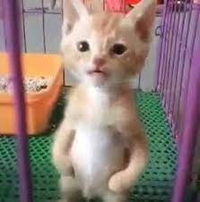
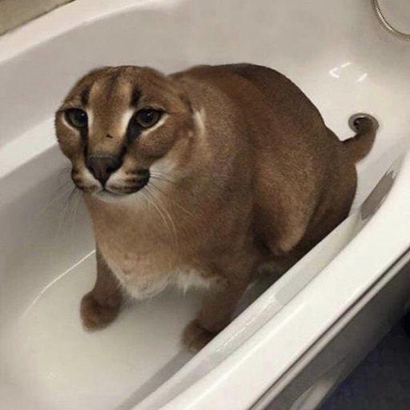
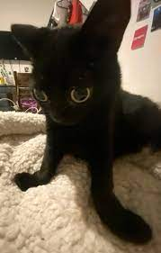
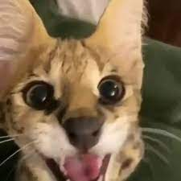

|
 |  | ||||
| Bingus | | Miguel | | Floppa | ||
| Edad: 1 Año | | Edad: 4 Meses | | Edad: 1 Año, 8 Meses | ||
| Sexo: Macho | | Sexo: Macho | | Sexo: Macho | ||
| Esterilizado: No | | Esterilizado: Si | | Esterilizado: Si | ||
| N° Identificación: 452974 | | N° Identificación: 571391 | | N° Identificación: 981632 | ||
| Bingus es un simpatico y cariñoso de raza Sphynx, normal que no posea pelaje pero va siempre fresco. Adoptalo y sera feliz contigo, miralo como te observa. 
|
| Energíco y sabe usar su caja de arena, fue abandonado en una construcción y busca un nuevo hogar. Se para en dos patas, épico.
|
| Gato Lince tierno y cómico, de raza semental y educado con otros gatos. si deseas tener lo mas cercano a un puma, aqui le conoces.
|
|  |

|
 | ||||
| Jinx Patalarga | | Gustavo Nekita Espacial | | Sogga | ||
| Edad: 1 Año, 1 Mes | | Edad: 3 Años | | Edad: 2 Años, 5 Meses | ||
| Sexo: Hembra | | Sexo: Hembra | | Sexo: Macho | ||
| Esterilizado: No | | Esterilizado: Si | | Esterilizado: Si | ||
| N° Identificación: 997317 | | N° Identificación: 570899 | | N° Identificación: 590084 | ||
| Jinx tiene la particularidad de tener sus patitas largas, que lo hace ver tierno. Busca casa donde vivir, no tiene amigos y se alegrará que lo adoptes.
|
| Gata carismatica y muy melosa con las personas, encontrada en una caja por Americo Vespucio, fue madre en algún momento y necesita cariño.
|
| Energíco, sociable con las personas, carismatico, suele traerle cosas a las personas como muestra de aprecio, busca nuevos dueños.
|